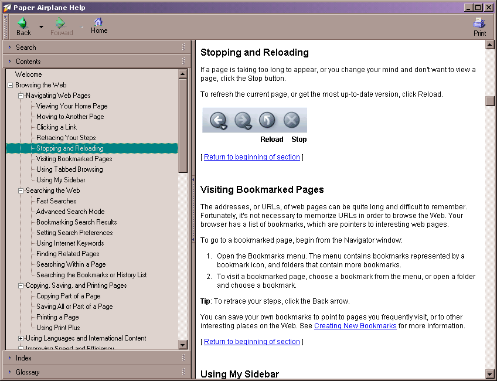

Table of Contents | Last
| Next
Using the Help System
The Help system is a browser window with special tools in its sidebar to facilitate finding the information you are looking for:

Help System
The Sidebar provides four panels:
- Search - Easily search through the available help topics to find what you need.
- Contents - A hierarchical list of all help topics available.
- Index - Use this panel similar to the index in the back of a book to find specific subject topics.
- Glossary - Find the definition for a term used in Paper Airplane's help
To quit help simply press the X button located in the upper-right corner of the help window.
Table of Contents | Last
| Next